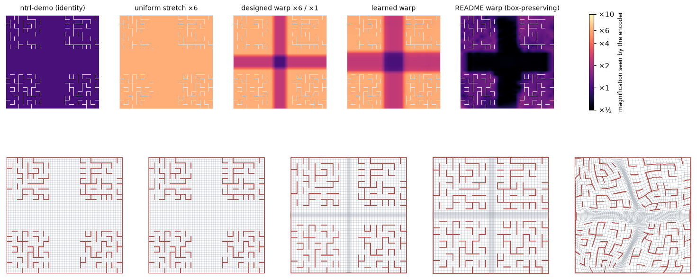
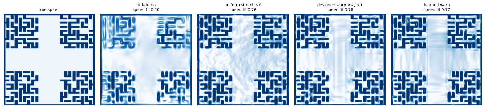
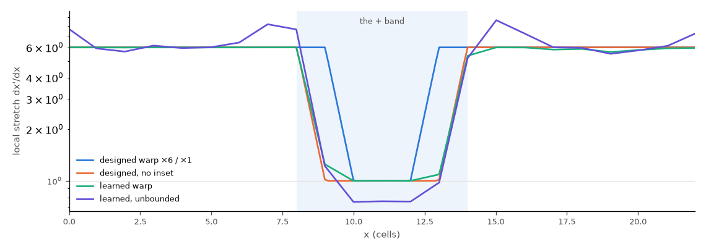

On the 22×22 cross maze, a warp of the robot’s configuration space placed in front of ntrl-demo’s Fourier encoder, magnifying the maze six-fold and leaving the open + at its own scale, lifts ntrl-demo from 66.5 % to 84.5 % of planning runs (three training seeds: 468 / 479 / 490 → 580 / 619 / 627 of 720) and from 63.8 % to 80.1 % on 1,200 new queries. Raising the input frequency everywhere helps too, but stops paying past ×4 (75.1 % at ×4, 72.1 % at ×6 on the new queries); the warp spends ×6 on the maze only and beats every uniform stretch on every seed there. The warp as first proposed, learned and confined to the box, learns to squeeze the + but cannot magnify the maze enough to matter (71.2 %); learned without that limit it reaches 79.1 %.
ntrl-demo learns a travel time T(x0, x1) between two robot poses with a network that first maps each pose to Fourier features sin/cos(2πBq). The features have fixed frequencies, so the network can only change so fast per unit of input. On the 22×22 maze a cell is 1/22 of the unit box: walls fade out of the field, and the robot drives into them.
README_warp.md proposes to put a diffeomorphism φ between the pose and the encoder, T = H(φ(x0), φ(x1)). By the chain rule ∇xT = JφT∇uH: where φ stretches by σ, the same encoder can make the field σ times sharper; where it compresses, the field is smoother. Stretch next to obstacles, compress open space, bound the Jacobian, learn φ with the field’s losses and a term that pulls in free space. The cross maze is the natural test: 47 % of it is one open + and the rest is four 8×8 mazes.
Every warp here is a diffeomorphism by construction (monotone 1-D maps or coupling steps of positive densities), applied inside ntrl-demo’s input mapping, so its loss, training loop and planner are untouched; with the identity warp the trainer reproduces ntrl-demo bit for bit. A uniform stretch φ(q) = s q is exactly ntrl-demo with its Fourier matrix multiplied by s (B × s), the control for every result.

The designed warp beats ntrl-demo on every seed and every distance. 580 / 619 / 627 vs 468 / 479 / 490 runs of 720; on the 1,200 new queries 957 / 979 / 949 vs 755 / 747 / 795 of 1,200. ntrl-demo’s own trainer with the identity warp gives 505 / 479 / 486, the same level.
It also beats every uniform stretch. Multiplying ntrl-demo’s Fourier matrix (a uniform stretch of the input) is the control: ×4 gives 81.1 % and 75.1 % on the two query sets, ×6 76.2 % and 72.1 %. On the 1,200 new queries, the larger set, the warp wins on every training seed (957 / 979 / 949 against 878 / 943 / 883 at ×4 and 874 / 875 / 846 at ×6), in every distance bin, and most where queries enter the maze from the + or cross it: one end in the + 78 vs 71 / 70 %, neither end 45 vs 31 / 19 %.
| field | seeds | runs solved per seed (of 720) | success % | ≤ 32 cells % | escape route, per seed | 1,200 new queries % | wall attraction |
|---|---|---|---|---|---|---|---|
| ntrl-demo | 3 | 468 / 479 / 490 | 66.5 | 79.8 | 0 / 0 / 0 of 120 | 63.8 | 0.106 |
| identity warp (= ntrl-demo) | 3 | 505 / 479 / 486 | 68.1 | 81.0 | 0 / 0 / 12 of 120 | 64.6 | 0.092 |
| README warp (learned, box-preserving) | 3 | 565 / 501 / 472 | 71.2 | 80.7 | 64 / 22 / 0 of 120 | 65.1 | 0.095 |
| uniform stretch ×2 (B × 2) | 3 | 567 / 542 / 584 | 78.4 | 85.8 | 48 / 21 / 79 of 120 | 70.3 | 0.075 |
| uniform stretch ×4 (B × 4) | 3 | 616 / 600 / 535 | 81.1 | 86.4 | 101 / 71 / 24 of 120 | 75.1 | 0.044 |
| uniform stretch ×6 (B × 6) | 3 | 528 / 545 / 573 | 76.2 | 90.3 | 0 / 0 / 21 of 120 | 72.1 | 0.034 |
| designed warp ×4 / ×1 | 3 | 542 / 535 / 533 | 74.5 | 88.3 | 18 / 0 / 2 of 120 | 73.1 | 0.041 |
| designed warp ×6 / ×1 | 3 | 580 / 619 / 627 | 84.5 | 90.6 | 29 / 68 / 98 of 120 | 80.1 | 0.033 |
| designed warp ×6 / ×1, no inset | 3 | 563 / 556 / 634 | 81.2 | 90.9 | 8 / 2 / 107 of 120 | 74.2 | 0.030 |
| designed warp ×10 / ×1 | 1 | 366 | 50.8 | 61.0 | 0 of 120 | 45.4 | 0.027 |
| learned warp, bounded ×1..×6 | 3 | 591 / 522 / 596 | 79.1 | 88.2 | 55 / 0 / 67 of 120 | 74.9 | 0.030 |
| comparison | seeds | runs only the first solves | runs only the second solves | McNemar p |
|---|---|---|---|---|
| designed warp ×6 / ×1 vs ntrl-demo | 3 | +425 | −36 | 2e-85 |
| designed warp ×6 / ×1 vs uniform stretch ×4 (B × 4) | 3 | +248 | −173 | 0.0003 |
| designed warp ×6 / ×1 vs uniform stretch ×6 (B × 6) | 3 | +273 | −93 | 1e-21 |
| learned warp, bounded ×1..×6 vs ntrl-demo | 3 | +326 | −54 | 2e-48 |
| README warp (learned, box-preserving) vs ntrl-demo | 3 | +206 | −105 | 1e-08 |
| uniform stretch ×4 (B × 4) vs ntrl-demo | 3 | +391 | −77 | 1e-51 |
| uniform stretch ×6 (B × 6) vs ntrl-demo | 3 | +266 | −57 | 2e-33 |
Success: MPPI runs that reach the goal without the robot touching a wall, planning seeds 0/1/2, pooled over training seeds 87358 / 1 / 2. ≤ 32 cells: the five shorter bins. Escape route: the 40 queries of the 32–64-cell bin, which all leave one dead-end pocket. 1,200 new queries: planning seed 0 (in brackets: training seeds evaluated there when fewer). Wall attraction: share of held-out near-wall poses where the field’s descent direction points into the wall (mean over seeds). Paired: the same query, planning seed and training seed; McNemar’s p treats runs as independent, but a query’s three planning seeds nearly always agree and the training seed is the larger source of variance, so p overstates; compare the per-seed counts (the README warp, for example, wins on two seeds through the escape route and ties up to 32 cells).
Success by true travel distance; each point pools the training seeds a field has, the whisker is their range. Left: the maze-scale study's 240 queries, planning seeds 0/1/2. Right: the 1,200-query set from 96 new goals, planning seed 0. Hover a panel for the numbers.
On the 20×20 cross (204 of 400 cells open, prepare run 20261103T190009Z-01bd3aac) the same designed warp plans 533 / 548 / 538 runs against ntrl-demo’s 443 / 449 / 466 (75.0 vs 62.9 %). Uniform stretch reaches 74.2 % at ×4 and 71.9 % at ×6. The warp is ahead of ×4 on every seed, but only by 4–6 runs (89.9 vs 86.9 % up to 32 cells), and ×6 everywhere is again below ×4. On the smaller maze the warp’s margin over the best uniform stretch is small.
| field | seeds | runs solved per seed (of 720) | success % | ≤ 32 cells % | escape route, per seed (of 120) |
|---|---|---|---|---|---|
| ntrl-demo (identity warp) | 3 | 443 / 449 / 466 | 62.9 | 75.4 | 0 / 0 / 0 |
| uniform stretch ×4 | 3 | 527 / 544 / 532 | 74.2 | 86.9 | 0 / 0 / 39 |
| uniform stretch ×6 | 3 | 555 / 522 / 476 | 71.9 | 86.3 | 0 / 0 / 0 |
| designed warp ×6 / ×1 | 3 | 533 / 548 / 538 | 75.0 | 89.9 | 0 / 0 / 1 |
The README’s warp is the identity plus bounded increments, so over the scale of the maze it maps the box roughly onto itself. Implemented as coupling steps that map the box exactly onto itself and trained as proposed (ntrl-demo’s loss through φ, free space pulled in to a quarter of its area, stretch bounded), it learns what it is asked: the open + shrinks to 0.52× per axis and the maze grows to 1.21×. Planning does not change: 565 / 501 / 472 runs, 80.7 % up to 32 cells against ntrl-demo’s 79.8 %, and the walls leak as often.
Two facts of this maze cap what any box-preserving warp can do. The + is 47 % of the area, so even squeezing it to nothing frees at most √(1/0.53) = 1.37× per axis for the maze. And the robot is slowed by a wall over about 65 % of every corridor’s width (0.325 of 0.45 cells on each side for an aligned robot, everything broadside), so stretching “near walls” is stretching the maze, not a thin band inside it. ntrl-demo’s failures are wall leaks: at 88–100 % of first wall contacts the field’s descent points into the wall, with a learned speed 3–5 times the label. They need four- to six-fold magnification (table above), which only a warp that is allowed to enlarge the maze can give. Variants confirm it: a near-wall expansion term, designed versions of the same redistribution (coupling and separable, one with every grid line stretched) and a heading-only stretch all stay at ntrl-demo’s level.
| field | seeds | runs solved per seed (of 720) | ≤ 32 cells % | linear stretch: + / maze | wall attraction |
|---|---|---|---|---|---|
| ntrl-demo | 3 | 468 / 479 / 490 | 79.8 | 1 / 1 | 0.106 |
| README warp (learned, box-preserving) | 3 | 565 / 501 / 472 | 80.7 | 0.52 / 1.21 | 0.095 |
| README warp + near-wall expansion | 1 | 462 | 77.0 | 0.53 / 1.21 | 0.099 |
| designed box-preserving warp (ratio 3) | 1 | 468 | 78.0 | 0.78 / 1.09 | 0.085 |
| designed box-preserving warp (ratio 12) | 1 | 468 | 78.0 | 0.61 / 1.11 | 0.081 |
| designed grid-line stretch (box-preserving) | 1 | 498 | 83.0 | 0.63 / 1.06 | 0.085 |
| heading-only stretch ×6 | 1 | 449 | 74.8 | 1 / 1 | 0.108 |
Short range is set by the walls. The share of near-wall poses whose descent points into the wall falls from 0.106 (ntrl-demo) to 0.044 at ×4 and 0.034 at ×6; the warp, ×6 in the maze, has 0.033. Success up to 32 cells rises with it, from 79.8 % to 86.4 (×4), 90.3 (×6) and 90.6 % (warp) on the 240 queries.
Past ×4, uniform stretch stops paying, and the warp does not. ×6 everywhere draws sharper walls than ×4 but plans no better (76.2 % vs 81.1 %; 72.1 % vs 75.1 % on the new queries). The warp with ×6 on the maze and ×1 on the + is ahead of both. At ×4, where the uniform stretch is not yet too high, the same warp shape does not help (74.5 % vs 81.1 %; 73.1 % vs 75.1 % on the new queries), and at ×10 / ×1 it breaks (50.8 %, stalls), as over-scaled Fourier matrices did in the maze-scale study. So the warp helps by letting the maze have a frequency that would already be too high for the open +.
Where the magnification must go. On the 1,200 new queries, three training seeds each: the design, with the maze and the + band’s edge cells (which carry the + outline walls) at ×6 and the open interior at ×1, plans 80.1 %; the same warp without that one-cell inset, its outline walls on the ramp at about ×2–3, 74.2 % (lower on every seed: 887 / 906 / 877 vs 957 / 979 / 949); ×6 everywhere 72.1 %; ×4 everywhere 75.1 %. Both mistakes cost the long queries that enter or cross the maze: the walls that bound the open area need the magnification as much as the maze does, and the open interior must not get it. This is the README’s premise taken literally: stretch at every obstacle, compress open space.
What ×6 spoils inside the open + is not settled. Its field there has no extra local minima (≤ 0.02 per long path for every field; almost all minima lie in the maze), no more slow patches and no worse near-wall leaks than the warp’s. On the 240-query set the long bin is one route: all 40 queries of 32–64 cells start in a dead-end pocket at the top of the top-right quadrant (per seed, of 120: ×4 101 / 71 / 24, ×6 0 / 0 / 21, warp 29 / 68 / 98); it is erratic between fields, so the 1,200 new queries, whose long bins draw on 96 goals, are the firmer evidence.
| field | seeds | ≤ 32 cells % | escape route % | wall attraction | near-wall slope | local minima / long path |
|---|---|---|---|---|---|---|
| ntrl-demo | 3 | 79.8 | 0 | 0.106 | 0.30 | – |
| uniform stretch ×2 (B × 2) | 3 | 85.8 | 41 | 0.075 | 0.35 | 0.08 |
| uniform stretch ×4 (B × 4) | 3 | 86.4 | 54 | 0.044 | 0.47 | 0.10 |
| uniform stretch ×6 (B × 6) | 3 | 90.3 | 6 | 0.034 | 0.54 | 0.17 |
| designed warp ×4 / ×1 | 3 | 88.3 | 6 | 0.041 | 0.45 | 0.52 |
| designed warp ×6 / ×1 | 3 | 90.6 | 54 | 0.033 | 0.56 | 0.17 |
| designed warp ×10 / ×1 | 1 | 61.0 | 0 | 0.027 | 0.66 | 1.75 |
| learned warp, bounded ×1..×6 | 3 | 88.2 | 34 | 0.030 | 0.57 | 0.32 |

Can the warp be learned instead of designed? Every learned variant below trains ntrl-demo’s loss through φ together with the warp’s own terms, from the first epoch. Three lessons, in the order they came up.
With these, the warp learns the designed shape on its own (figure): the + band compressed to ×1.00 across, the maze at ×6. The best learned variant, bounded to the design’s own range (×1 to ×6), reaches the design’s magnitudes exactly and plans 591 / 522 / 596 runs of 720 (79.1 %; 74.9 % on the 1,200 new queries): ten points above ntrl-demo, at the uniform stretch’s level, below the design. Freezing a learned warp and training a new field on it from scratch changes nothing (tested on the unbounded variant), so the field adapting to a moving warp is not the problem.
The profiles differ at the + band’s edges. The design keeps the band’s outermost cells, which carry the + outline walls, at ×6 and ramps down one cell in; every learned warp ramps down at the band edge itself. A separable map gives a whole column one stretch, and those edge columns are open space inside the other arm of the +, where the free-space term compresses them. Control: the design without its one-cell inset, compressing the edge cells as the learned warps do, plans 563 / 556 / 634 runs (81.2 %; 90.9 % up to 32 cells against 90.6 % with the inset). On the 1,200 new queries it plans 74.2 %, against 80.1 % for the design with the inset and 74.9 % for the learned warp: compressing the edge cells costs the design what separates it from the learned warp, on the long queries that pass the outline walls. A row-dependent learned warp (coupling steps, lc6b), which could compress the arms without those columns, shears instead: where the compressed rows of an arm meet uncompressed maze rows its singular values reach 134, and it plans 486 / 474 runs (66.7 %). A learned warp that keeps the outline walls magnified needs a shear bound or a different form.

| run | warp and terms | seeds | runs solved per seed | success % | ≤ 32 cells % | linear stretch: + / maze | stalled runs per seed |
|---|---|---|---|---|---|---|---|
| lf | coupling, box-preserving (README as proposed), free space pulled in | 3 | 565 / 501 / 472 | 71.2 | 80.7 | 0.52 / 1.21 | 68 |
| lsep4 | free stretch starting at ×4, free space pulled in, 8 nodes / cell | 1 | 484 | 67.2 | 80.7 | 1.04 / 1.09 | 64 |
| lsb6 | free stretch from ×6, + area target, near-wall area target, 8 nodes / cell | 1 | 487 | 67.6 | 81.2 | 2.44 / 6.85 | 206 |
| lsb6s | as above, strong curvature penalty | 1 | 497 | 69.0 | 82.8 | 2.48 / 6.94 | 185 |
| lsb6c | as above, 1 node / cell, small curvature penalty | 1 | 538 | 74.7 | 89.2 | 2.53 / 6.39 | 146 |
| lsn5 | box-preserving separable × 5.1, free space pulled in | 1 | 548 | 76.1 | 88.3 | 0.46 / 1.15 | 110 |
| la6 | free stretch from ×6, near-wall stretch along the wall normal, 1 node / cell; frozen at epoch 2,000 | 1 | 537 | 74.6 | 89.5 | 2.51 / 5.80 | 131 |
| la6n | the same, learned to the end | 3 | 580 / 537 / 479 | 73.9 | 85.8 | 2.40 / 6.60 | 160 |
| la7b | the same, stretch bounded to ×1..×7, starting at ×2.65 | 3 | 567 / 565 / 489 | 75.0 | 85.4 | 2.15 / 4.43 | 120 |
| la6r | la6n’s learned warp frozen, field trained again from scratch | 3 | 547 / 527 / 541 | 74.8 | 85.9 | 2.40 / 6.60 | 145 |
| la6b | separable, stretch bounded to ×1..×6, starting at ×5.9 | 3 | 591 / 522 / 596 | 79.1 | 88.2 | 2.49 / 5.98 | 118 |
| lc6b | coupling (row-dependent stretch), bounded to ×1..×6, starting at ×5.9 | 2 | 486 / 474 | 66.7 | 80.0 | 2.45 / 5.97 | 179 |
Model.train() step for step (trainer.py), 5,000 epochs, training seeds 87358 / 1 / 2; with the identity warp it reproduces ntrl-demo’s registered run bit for bit on the same GPU. Warp grids: their own AdamW group (lr 3e-3, no weight decay).| field | training seed | registered run | runs solved | GPU |
|---|---|---|---|---|
| designed box-preserving warp (ratio 12) | 87358 | 20261103T165706Z-425bec33 | 468 / 720 | RTX 3090 |
| designed box-preserving warp (ratio 3) | 87358 | 20261103T165658Z-ac1a66b4 | 468 / 720 | RTX 5070 |
| heading-only stretch ×6 | 87358 | 20261103T170514Z-25769e53 | 449 / 720 | RTX 3090 |
| identity warp (= ntrl-demo) | 87358 | 20261103T163539Z-48369bc1 | 505 / 720 | RTX 3090 |
| identity warp (= ntrl-demo) | 1 | 20261103T171116Z-e9eb6c1d | 479 / 720 | RTX 3090 |
| identity warp (= ntrl-demo) | 2 | 20261103T170442Z-1832e0eb | 486 / 720 | RTX 5070 |
| learned warp, frozen at epoch 2,000 | 87358 | 20261103T181513Z-43a78517 | 537 / 720 | RTX 5070 |
| learned warp, bounded ×1..×6 | 87358 | 20261103T191129Z-0b3ade71 | 591 / 720 | RTX 5070 |
| learned warp, bounded ×1..×6 | 1 | 20261103T190455Z-09087650 | 522 / 720 | RTX 3090 |
| learned warp, bounded ×1..×6 | 2 | 20261103T193254Z-f38c0a35 | 596 / 720 | RTX 5070 |
| learned warp (unbounded) | 87358 | 20261103T181400Z-05cdbdf5 | 580 / 720 | RTX 3090 |
| learned warp (unbounded) | 1 | 20261103T182932Z-73fb045f | 537 / 720 | RTX 5070 |
| learned warp (unbounded) | 2 | 20261103T183230Z-20d52546 | 479 / 720 | RTX 3090 |
| learned warp, frozen, field retrained | 87358 | 20261103T184433Z-7f9a2e52 | 547 / 720 | RTX 5070 |
| learned warp, frozen, field retrained | 1 | 20261103T184938Z-bfb6b0b0 | 527 / 720 | RTX 3090 |
| learned warp, frozen, field retrained | 2 | 20261103T185156Z-8b936a27 | 541 / 720 | RTX 5070 |
| learned warp, bounded ×1..×7 | 87358 | 20261103T190209Z-f226f181 | 567 / 720 | RTX 5070 |
| learned warp, bounded ×1..×7 | 1 | 20261103T184058Z-6552a936 | 565 / 720 | RTX 3090 |
| learned warp, bounded ×1..×7 | 2 | 20261103T192134Z-a3fe8b48 | 489 / 720 | RTX 3090 |
| learned warp, row-dependent (coupling), bounded ×1..×6 | 87358 | 20261103T201531Z-344bf770 | 486 / 720 | RTX 5070 |
| learned warp, row-dependent (coupling), bounded ×1..×6 | 1 | 20261103T201009Z-9080ef2c | 474 / 720 | RTX 3090 |
| README warp (learned, box-preserving) | 87358 | 20261103T164738Z-b2e69df3 | 565 / 720 | RTX 3090 |
| README warp (learned, box-preserving) | 1 | 20261103T182219Z-a857b734 | 501 / 720 | RTX 3090 |
| README warp (learned, box-preserving) | 2 | 20261103T172440Z-1bada8f2 | 472 / 720 | RTX 5070 |
| README warp + near-wall expansion | 87358 | 20261103T164658Z-20cb303a | 462 / 720 | RTX 5070 |
| learned free stretch, 8 nodes / cell | 87358 | 20261103T174348Z-12dc4d4f | 487 / 720 | RTX 3090 |
| learned free stretch, area target | 87358 | 20261103T175733Z-1c0bf9df | 538 / 720 | RTX 3090 |
| learned free stretch, 8 nodes / cell, smoothed | 87358 | 20261103T180542Z-376eddf4 | 497 / 720 | RTX 3090 |
| learned free stretch from ×4 (no near-wall term) | 87358 | 20261103T171721Z-f2ce6077 | 484 / 720 | RTX 3090 |
| learned box-preserving × 5.1 | 87358 | 20261103T180024Z-db897872 | 548 / 720 | RTX 5070 |
| ntrl-demo | 87358 | 20261102T060517Z-0df939ae | 468 / 720 | RTX 5070 |
| ntrl-demo | 1 | 20261102T062426Z-ed343a1b | 479 / 720 | RTX 3090 |
| ntrl-demo | 2 | 20261102T063128Z-542b25dd | 490 / 720 | RTX 3090 |
| designed warp ×10 / ×1 | 87358 | 20261103T182224Z-a4f4a21d | 366 / 720 | RTX 5070 |
| designed warp ×4 / ×1 | 87358 | 20261103T185723Z-06c0f1b2 | 542 / 720 | RTX 3090 |
| designed warp ×4 / ×1 | 1 | 20261103T183742Z-43cf48cd | 535 / 720 | RTX 5070 |
| designed warp ×4 / ×1 | 2 | 20261103T191357Z-dbd310cb | 533 / 720 | RTX 3090 |
| designed warp ×6 / ×1 | 87358 | 20261103T171757Z-79906972 | 580 / 720 | RTX 5070 |
| designed warp ×6 / ×1 | 1 | 20261103T173406Z-5a9640e4 | 619 / 720 | RTX 5070 |
| designed warp ×6 / ×1 | 2 | 20261103T173057Z-c4de6c30 | 627 / 720 | RTX 3090 |
| designed warp ×6 / ×1, no inset | 87358 | 20261103T194223Z-f37ecc36 | 563 / 720 | RTX 5070 |
| designed warp ×6 / ×1, no inset | 1 | 20261103T193637Z-ffd10414 | 556 / 720 | RTX 3090 |
| designed warp ×6 / ×1, no inset | 2 | 20261103T195028Z-470d7a35 | 634 / 720 | RTX 5070 |
| designed grid-line stretch (box-preserving) | 87358 | 20261103T171027Z-3eb3bf10 | 498 / 720 | RTX 5070 |
| uniform stretch ×2 (B × 2) | 87358 | 20261103T163541Z-5e381b7f | 567 / 720 | RTX 5070 |
| uniform stretch ×2 (B × 2) | 1 | 20261103T203944Z-f170dd2d | 542 / 720 | RTX 5070 |
| uniform stretch ×2 (B × 2) | 2 | 20261103T204035Z-117922d4 | 584 / 720 | RTX 3090 |
| uniform ×3 | 87358 | 20261103T164136Z-90040a28 | 516 / 720 | RTX 3090 |
| uniform stretch ×4 (B × 4) | 87358 | 20261103T172457Z-78235cd0 | 616 / 720 | RTX 3090 |
| uniform stretch ×4 (B × 4) | 1 | 20261103T180931Z-9b9b0029 | 600 / 720 | RTX 5070 |
| uniform stretch ×4 (B × 4) | 2 | 20261103T175150Z-253aed03 | 535 / 720 | RTX 3090 |
| uniform stretch ×6 (B × 6) | 87358 | 20261103T164117Z-ffab55da | 528 / 720 | RTX 5070 |
| uniform stretch ×6 (B × 6) | 1 | 20261103T173749Z-06713d33 | 545 / 720 | RTX 3090 |
| uniform stretch ×6 (B × 6) | 2 | 20261103T174447Z-69c1c61f | 573 / 720 | RTX 5070 |